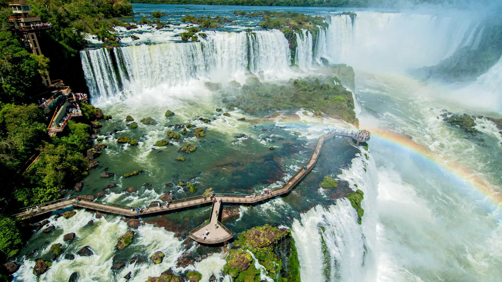
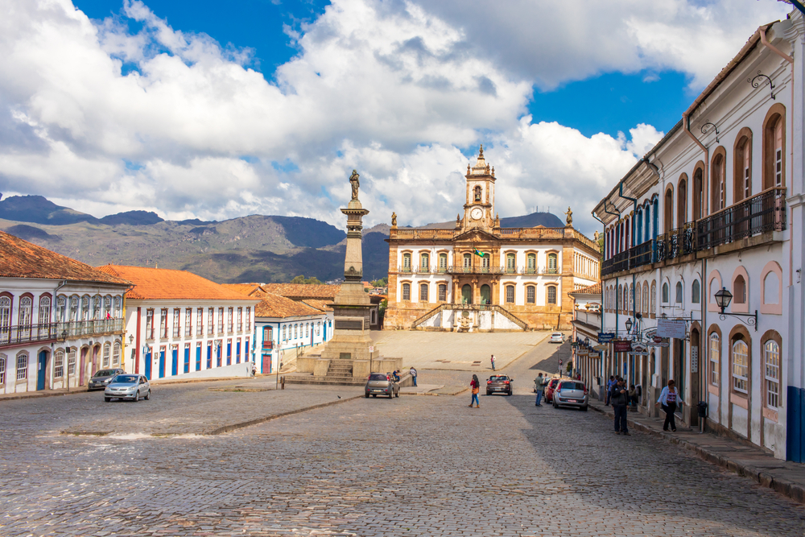
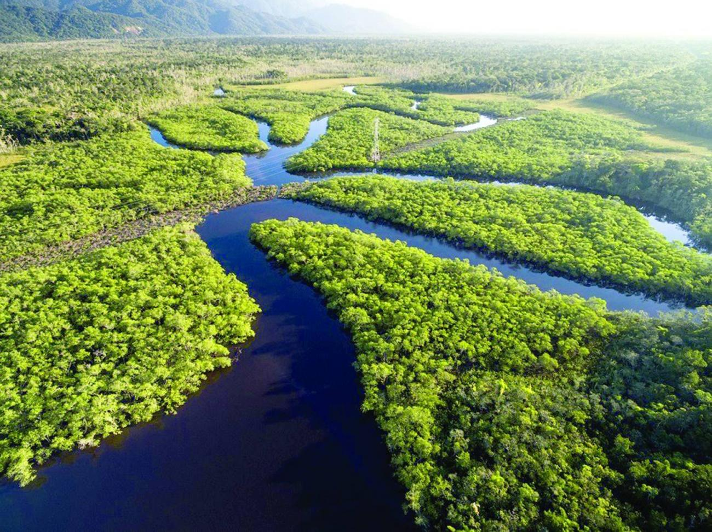
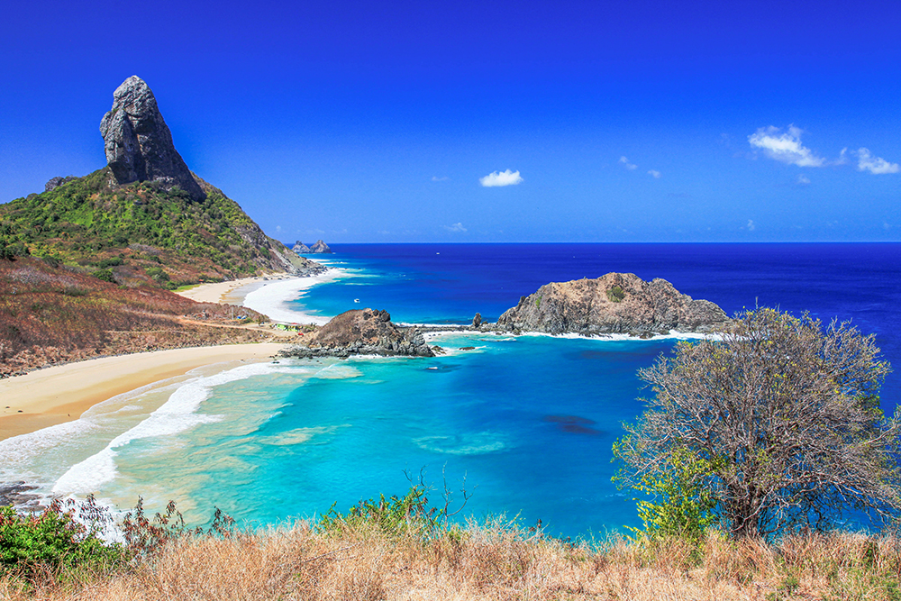

01A FORÇA DA NATUREZA
Cataratas do Iguaçu
FOZ DO IGUAÇU — PARANÁ
Um espetáculo em que a água domina a paisagem. Formadas por centenas de quedas, as Cataratas do Iguaçu impressionam pela força, pelo som e pela imensidão de suas águas, cercadas pela Mata Atlântica.

02A MEMÓRIA DO BRASIL
Ouro Preto
MINAS GERAIS
Entre ladeiras de pedra, igrejas barrocas e casarões preservados, Ouro Preto mantém viva parte importante da história brasileira. Sua arquitetura revela a riqueza artística e os contrastes do período colonial.

03A VIDA EM SUA GRANDEZA
Amazônia
REGIÃO NORTE
Uma imensidão de rios, árvores e formas de vida. A Amazônia abriga uma biodiversidade extraordinária e tem papel fundamental no equilíbrio ambiental. Mais do que uma floresta, é um patrimônio natural e cultural de enorme importância.

04ENTRE O MAR E O CÉU
Fernando de Noronha
PERNAMBUCO
Águas transparentes, formações rochosas e praias de beleza impressionante fazem deste arquipélago um dos destinos naturais mais conhecidos do país. Um refúgio de vida marinha que revela a beleza do litoral brasileiro.